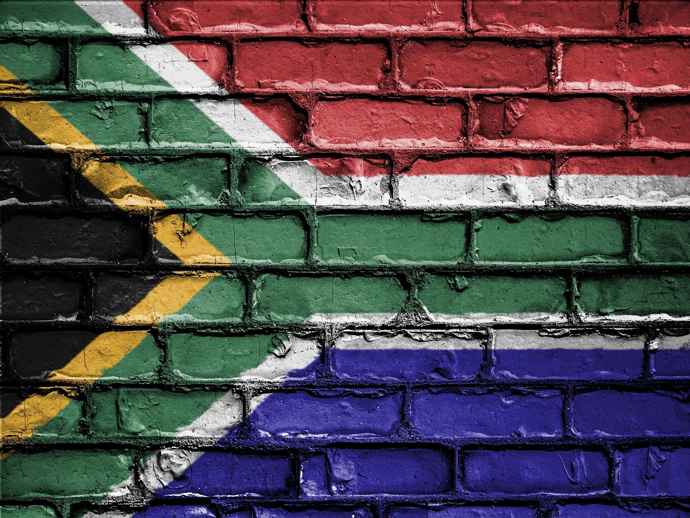

Welcome to Our Website
We are dedicated to providing the best experience for our customers.

What makes South Africa so beautiful and sutch a fantastic destination.
South Africa is celebrated as one of the most beautiful countries on Earth because it truly offers a world in one country, blending jaw-dropping natural landscapes with an incredibly vibrant soul. Its physical beauty is legendary, stretching from the iconic, flat-topped Table Mountain and the rugged cliffs of Chapmans Peak in Cape Town, all the way across the lush, forested coastal paths of the Garden Route to the towering, majestic peaks of the Drakensberg Mountains. This dramatic terrain serves as the backdrop for world-class wildlife spectacles, where the pristine wilderness of Kruger National Park allows you to see the "Big Five", roaming freely in their natural habitat. Yet, what makes South Africa undeniably beautiful is the profound warmth of its people—the "Rainbow Nation." Rooted in the deeply held local philosophy of Ubuntu—the belief that our humanity is beautifully interconnected—the country welcomes visitors with an unmatched, authentic friendliness and a rich, diverse tapestry of cultures, music, and traditions that stay with you long after you leave.